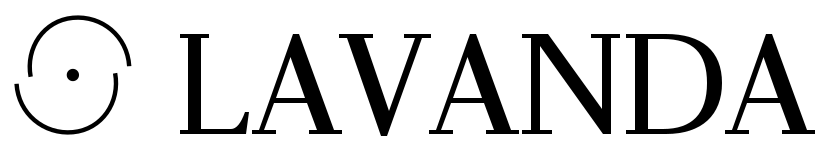
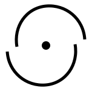
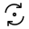
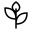
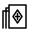
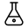
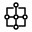
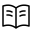

LAVANDA / Identità visiva
Prima direzione · Ottobre 2026

Il ritorno
al centro.
Una rivista che attraversa antropologia, filosofia, botanica e linguaggi del simbolo. Un'identità costruita attorno al ciclo, all'apertura e alla relazione fra opposti.
Nero e bianco definiscono i poli. Il colore abita lo spazio nel mezzo.
Direzione proposta a partire dal manifesto di Martina. Il tono editoriale resta da definire insieme.
Stesso segno, polarità inversa. Il contrasto è parte della costruzione, senza effetti, ombre o ornamenti.
The riot witch
LAVANDA / Segno e colore
Il centro, i poli, il passaggio
Un ciclo aperto.
Due archi sfalsati circondano un punto. La forma contiene un ritorno e un'interruzione: non chiude il movimento in un anello perfetto.

Un segno contemporaneo,
disegnato per LAVANDA.
Il punto non è un vertice. Gli archi hanno la stessa forma e si incontrano attraverso lo spazio vuoto. Il simbolo nasce dal contenuto del progetto, senza imitare un sigillo storico.
Nel logotipo, le geometrie di A e V dialogano con la curva della D. Tutte le lettere sono tracciati originali: nessun font necessario per riprodurre il marchio.
NeroTesto, ombra, densità.
#000000BiancoPagina, respiro, apertura.
#FFFFFFPervincaRiconoscimento e passaggio.
#8093F1MentaMateria vivente e relazione.
#9FFFCBGialloNota, richiamo, luce.
#FFD60ARosaCorpo e sensibilità.
#FDC5F5Nero sui colori chiari; bianco sul nero. Un colore dominante per composizione. Queste associazioni sono scelte grafiche del progetto, non corrispondenze esoteriche universali.
LAVANDA / Strumenti di orientamento
Icone e uso essenziale
Una grammatica
che resta leggibile.
Sei icone originali per attraversare i contenuti. La stessa griglia e lo stesso tratto accompagnano aree di ricerca diverse, senza trasformare ogni elemento in un simbolo da decifrare.

Ciclo
Ritmi, ritorno, trasformazione.

Botanica
Lo stelo e la materia vivente.

Arcani
Tarocchi e lettura archetipica.

Alchimia
Il recipiente e la trasformazione.

Corrispondenze
Nodi e relazioni fra sistemi.

Lettura
Blog, testi, digital fanzine.
Spazio prima del decoro.
Lasciare un margine libero attorno al marchio. Non deformare il logotipo, chiudere gli archi o spostare il punto. Su fotografia, scegliere un campo uniforme o inserire una zona dedicata.
Le icone sono disegni contemporanei. Il diagramma Corrispondenze non riproduce l'Albero della Vita; la carta Arcani non riproduce un arcano tradizionale.
Griglia icone: 32 × 32. Tratto: 1,5. Usare una parola accanto all'icona quando serve orientare la lettura.
Dimensioni minime
| Elemento | Schermo | Stampa |
|---|---|---|
| Logo completo | 180 px | 40 mm |
| Solo logotipo | 140 px | 30 mm |
| Emblema | 24 px | 7 mm |
| Icone | 24 px | 6 mm |
Per la favicon a 16–23 px è prevista una versione semplificata. I valori indicano la larghezza.